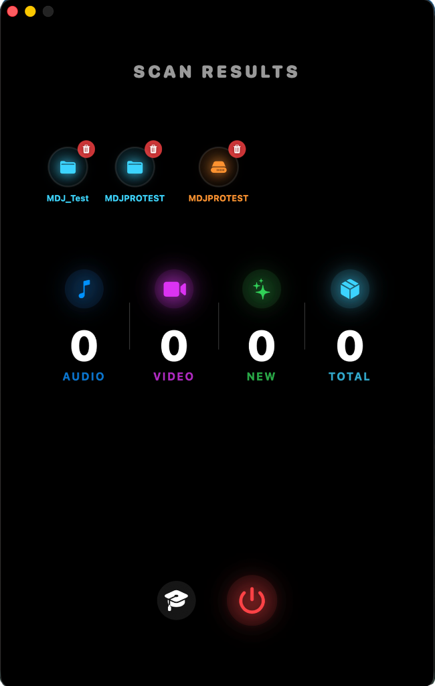

0. Introduction Générale – MDJPRO
Introduction
MDJPRO (Magic DJ Pro) est une plateforme professionnelle de gestion, d'audit et d'organisation musicale conçue pour les DJ, les producteurs et les opérateurs d'événements travaillant selon les normes réelles de l'industrie.
Développé par Miami DJ Beat, MDJPRO n'est ni un lecteur, ni un simple organisateur de fichiers. Il s'agit d'un système de contrôle de bibliothèque musicale créé pour protéger, structurer et optimiser l'un des actifs plus précieux d'un DJ professionnel : sa base de données musicale.
Dans un environnement où les erreurs d'organisation, les métadonnées corrompues ou les analyses incorrectes peuvent compromettre une performance en direct, MDJPRO agit comme un pare-feu opérationnel entre le chaos du disque dur et la stabilité requise par des logiciels tels que Serato DJ, Rekordbox et VirtualDJ.
Philosophie du système
MDJPRO est construit sur un principe fondamental :
« La musique professionnelle ne s'improvise pas. Elle est structurée, validée et protégée. »
Pour cette raison, l'application fonctionne via des flux de travail contrôlés, des règles claires et des validations constantes. Chaque action au sein du système — du chargement d'un dossier racine à l'édition d'une métadonnée — répond à une logique conçue pour prévenir les erreurs humaines, la perte de données et la désorganisation progressive.
MDJPRO ne remplace pas le logiciel DJ. Il le prépare, l'alimente correctement et le maintient stable.
Pour qui est MDJPRO ?
- DJ professionnels et résidents
- DJ pour événements mobiles et spéciaux
- Producteurs et conservateurs de musique
- Académies et écoles de DJ
- Entreprises de divertissement et d'événements
- Utilisateurs travaillant avec de grandes bibliothèques multi-appareils
Si votre musique fait partie de votre identité professionnelle et de votre gagne-pain, MDJPRO a été conçu pour vous.
Ce que résout MDJPRO
- Bibliothèques désordonnées et difficiles à entretenir
- Métadonnées incomplètes, fausses ou incohérentes
- Erreurs d'analyse dans Serato ou d'autres logiciels
- Perte de chemins lors du déplacement de disques ou de dossiers
- Manque de structure pour les événements, les sets et les décennies
- Risque d'endommagement de la base de données originale
Le système introduit ordre, traçabilité et contrôle sans interférer avec le flux créatif du DJ.
Bienvenue sur MDJPRO
La solution d'ingénierie logicielle la plus avancée pour la gestion intelligente des bibliothèques musicales sur macOS.
Votre Nouveau Standard :
Conçu pour les DJ professionnels et les collectionneurs qui exigent la perfection dans l'organisation de leurs métadonnées. MDJPRO ne se contente pas d'organiser ; il transforme votre flux de travail grâce à des algorithmes DNA et une automatisation sans précédent.
Comment utiliser ce manuel
Ce manuel a été conçu comme un guide technique et opérationnel, et non comme un document promotionnel. Vous y trouverez des explications claires sur chaque module, des règles d'utilisation, des avertissements critiques, des flux de travail recommandés et des bonnes pratiques professionnelles.
Il est recommandé de lire l'intégralité du manuel avant d'utiliser des fonctions avancées, en particulier celles qui interagissent avec les structures de dossiers et les métadonnées.
© 2026 MDJPRO – Official Documentation.
1. CONFIGURATION REQUISE – MDJPRO
| COMPOSANT | EXIGENCE |
|---|---|
| Système d'exploitation | macOS 12 (Monterey) ou supérieur. macOS 14 (Sonoma) Recommandé. |
| Processeur | Apple Silicon uniquement (M1, M2, M3, M4). Intel Macs NON supportés. |
| Mémoire (RAM) | 8 Go Minimum. 16 Go Recommandé pour les grandes bibliothèques (>50k chansons). |
| Stockage | SSD requis pour héberger la bibliothèque. |
| Formats supportés | MP3, AAC, WAV, AIFF, MP4, MOV. |
| Logiciel DJ | Serato DJ Pro (100 % Natif). Compatible avec Rekordbox et VirtualDJ. |
© 2026 MDJPRO – Documentation Officielle.
2. Installation – MDJPRO
MDJPRO_Installer.pkg téléchargé. L'assistant natif d'Apple démarrera pour vous guider en toute sécurité.
© 2026 MDJPRO – Documentation Officielle.
3. Premiers Pas – MDJPRO
Cette section guide l'utilisateur à travers le processus d'enregistrement, d'activation et de validation de la licence. L'architecture d'activation lie votre licence à l'identifiant matériel (Hardware ID) unique de votre Mac pour garantir la sécurité de votre abonnement.

© 2026 MDJPRO – Documentation Officielle.
4. Interface Utilisateur – MDJPRO
ARCHITECTURE DE L'INTERFACE :
Le Command Hub est l'interface centrale des opérations. Son architecture unifiée permet l'exécution des commandes et le monitoring d'état en temps réel, éliminant la navigation par menus profonds.

Figure 4.1 : Vue d'ensemble du Poids de Commande (Command Hub)
© 2026 MDJPRO – Documentation Officielle.
5. ZONE DE CONTRÔLE – MDJPRO
Compatible avec les principales plateformes de logiciels DJ
Intégration Native : Le système réplique la structure des répertoires comme Crates et Subcrates, préservant la hiérarchie originale du disque dur.
Protocole XML Bridge : Nécessite l'activation de 'rekordbox xml' dans Préférences > Visualisation. Permet l'importation de structures via Drag & Drop.
Support des Virtual Folders : Le logiciel reconnaît la base de données pré-analysée comme une extension du système de fichiers, optimisant les temps de lecture.
© 2026 MDJPRO – Documentation Officielle.
© 2026 MDJPRO – Documentation Officielle.
6. Bibliothèque et Organisation 🔒 PREMIUM ONLY
LIBRARY WIZARD (Gestionnaire de Structure) : (Utilisation uniquement avec les abonnements Premium) Module d'automatisation qui génère des hiérarchies de répertoires standardisées sur le disque physique.

SPÉCIFICATIONS DES DOSSIERS (DNA)
Flux de Déploiement (Wizard Architecture)
© 2026 MDJPRO – Documentation Officielle.
7. Editor Tag – MDJPRO
ÉDITEUR DE MÉTADONNÉES (ID3) :
Gestion avancée des étiquettes pour la standardisation de la bibliothèque. Les modifications effectuées sont destructives et sont enregistrées physiquement dans le fichier pour garantir une compatibilité universelle avec les logiciels DJ.

© 2026 MDJPRO – Documentation Officielle.
8. MODE OPÉRATOIRE – MDJPRO
ANATOMIE DE L'ÉDITEUR :
Description : 7 zones d'édition + Nettoyeur Magique d'Emojis.
Champs Core :
- TITRE : Données visibles sur les lecteurs.
- INTERPRÈTE : Crédits artistiques et collaborations.
- ALBUM : Regroupement par volume ou groupe.
- AUTRES DONNÉES : Métadonnées opérationnelles (Année, Disque).
Visualisation technique des métadonnées en temps réel :
Contrôle du flux de travail situé en bas de l'éditeur :
- TRACK COUNTER : Volume total d'actifs dans la session.
- ACTIVE PATH : Moniteur d'emplacement en direct.
Gestion visuelle avancée et reproduction :
UTILITAIRES ET OUTILS
© 2026 MDJPRO – Documentation Officielle.
9. Raccourcis Clavier – MDJPRO
Optimisez votre flux de travail en utilisant des commandes rapides. Ces combinaisons permettent d'exécuter des actions critiques sans interrompre votre session de mixage ou d'édition.
Liste des Commandes Essentielles
© 2026 MDJPRO – Documentation Officielle.
10. Actions et Rapports – MDJPRO
PANNEAU DE RÉSULTATS :
Le centre de surveillance de MDJPRO fournit un rapport détaillé de l'état de la bibliothèque et de l'intégrité du système après chaque opération de balayage ou de distribution.

© 2026 MDJPRO – Documentation Officielle.
11. Guide Visuel des Fonctions – MDJPRO
Référence rapide des principales interfaces du logiciel. Cet écosystème garantit un flux de travail unifié, de l'activation à l'exportation finale.

Écran d'ouverture. Identifie votre version et confirme votre identité en tant qu'utilisateur officiel.
Gestion de l'abonnement, activation de la licence et vérification du statut Premium.
Centre de lancement principal pour Library Wizard, Tag Master et la gestion des disques.
Rapports en temps réel. Visualisez les fichiers traités, les nouveaux ajouts et les alertes d'intégrité.
Centre de contrôle d'intégrité. Gère les voyants d'état, les autorisations Apple et Serato Link.
Le cerveau éditeur de métadonnées. Standardisation ID3 compatible avec Serato et Rekordbox.
Toutes les interfaces utilisent le moteur de rendu unifié d'Apple pour garantir la netteté sur les écrans Retina et des performances optimales.
© 2026 MDJPRO – Documentation Officielle.
12. MOTEUR DE FICHIERS ET MULTIMÉDIA – MDJPRO
MDJPRO permet un contrôle granulaire sur les colonnes de vos fichiers pour garantir l'intégrité de la base de données.
| COLONNE | DESCRIPTION | ÉDITABLE ? | NIVEAU DE RISQUE |
|---|---|---|---|
| Nom de Fichier | Nom physique sur disque. | ✔ OUI | MOYEN |
| Titre / Artiste | Métadonnées ID3 internes du fichier. | ✔ OUI | SÛR |
| Chemin (Path) | Emplacement absolu dans le système de fichiers. | 🚫 NON | INFRASTRUCTURE |
MDJPRO utilise une politique de 'Zéro Confiance' pour les fichiers multimédias afin de prévenir la corruption de la base de données.
| FORMAT | ÉTAT | SPÉCIFICATION TECHNIQUE |
|---|---|---|
| MP4 | ÉLIGIBLE | Conteneur standard MPEG-4 Part 14. |
| MOV | ÉLIGIBLE | Apple QuickTime Movie (Natif macOS). |
| M4V | ÉLIGIBLE | Vidéo iTunes / Apple (Protégé ou libre). |
| MKV / AVI | BYPASS | Formats omis par sécurité structurelle. |
© 2026 MDJPRO – Documentation Officielle.
13. Sécurité et Bonnes Pratiques – MDJPRO
L'intégrité de votre bibliothèque musicale est notre priorité absolue. MDJPRO met en œuvre plusieurs couches de sécurité pour garantir un fonctionnement stable et sans risque.
MDJPRO fonctionne sous isolement sécurisé. L'accès aux disques externes nécessite une **autorisation explicite** via des marqueurs de sécurité (SSB) persistants.
Vos identifiants SaaS sont stockés dans le Trousseau chiffré de macOS. Au premier lancement, macOS demandera **Touch ID ou Mot de passe** pour créer le contexte de sécurité silencieux.
- ✔️ Permissions d'écriture actives.
- ✔️ Chemin d'origine validé physiquement.
- ✔️ Hash d'intégrité 1:1 confirmé.
Règles d'Or
Infrastructure critique recommandée pour MDJPRO Enterprise.
© 2026 MDJPRO – Documentation Officielle.
14. Résolution de Problèmes – MDJPRO
Guide technique pour la résolution d'incidents et terminologie standard de l'écosystème MDJPRO.
Guide de Résolution d'Incidents
➜ Action : Exécutez à nouveau la fonction **'Load Root'** pour renouveler le marqueur SSB.
➜ Action : Utilisez la fonction **'Relocate'** dans votre logiciel DJ ou réimportez le dossier Master.
➜ Action : Recodez en **H.264/AAC** en utilisant des outils standard (ex. Handbrake).
➜ Action : Vérifiez votre connexion et ressaisissez vos identifiants dans le panneau **Compte**.
Glossaire Technique
ASSET : Unité individuelle de fichier média (Audio/Vidéo).
CRATE : Conteneur logique d'organisation spécifique à Serato DJ.
ID3 TAG : Standard industriel de métadonnées intégrées aux fichiers.
ROOT : Répertoire racine ou point de montage d'un volume de données.
SANDBOX : Mécanisme de sécurité natif de macOS pour l'isolement des processus.
XML : Langage de balisage utilisé pour l'échange de bases de données.
© 2026 MDJPRO – Documentation Officielle.
15. Confidentialité et Mentions Légales – MDJPRO
MDJPRO respecte profondément la vie privée des utilisateurs. Le logiciel fonctionne dans un environnement local, garantissant que le contrôle des informations reste sur votre station de travail.
Accords de Confidentialité
© 2024-2026 Miami DJ Beat LLC. Tous droits réservés. MDJPRO, le logo et 'Library Wizard' sont des marques déposées.
Miami DJ Beat LLC garantit qu'elle ne vend ni ne transfère d'informations à des tiers. L'accès est limité uniquement aux zones autorisées du système de fichiers.
Le système ne collecte, n'indexe ni ne transmet le contenu musical de l'utilisateur à des serveurs externes. Toutes les métadonnées sont traitées localement.
Le logiciel est fourni 'tel quel'. Le développeur n'assume aucune responsabilité pour les pertes de données résultant d'une défaillance matérielle ou d'une mauvaise utilisation.
© 2026 MDJPRO – Documentation Officielle.
16. Support Technique – MDJPRO
Miami DJ Beat LLC s'engage à fournir une infrastructure opérationnelle stable et évolutive pour tous ses utilisateurs professionnels.
Ligne Directe
305-423-5814
Support Technique
Miamidjbeat@Soport.com
Horaires
Tél : Lun-Mer
13h00 - 17h00
SMS : 24 Heures
Portée
Licences et
Erreurs Techniques d'Infrastructure
Réponse
Communication immédiate
après validation du compte
• La récupération de fichiers supprimés par l'utilisateur.
• L'assistance pour les logiciels tiers (Serato, Rekordbox, VDJ).
MDJPRO — MIAMI DJ BEAT LLC
© 2026. Tous droits réservés. Infrastructure Technique des Opérations Musicales.
SYSTEM VALIDATED BY ANTIGRAVITY AI ENGINE // TWIN PARITY ACHIEVED // REV 1.9.0
© 2026 MDJPRO – Documentation Officielle.